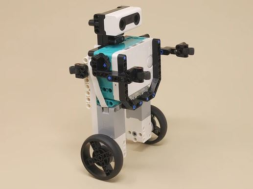

Balance Bot
The programs use a mathematical technique called a PID Controller to do the balancing, based on input from the hub's gyro sensor.

Balance Bot | |
|---|---|
|  |
This robot balances by itself on its two wheels. Three different programs are provided for you to try. With one program, you control the overall forward and backward travel of the robot with your hand in front of the distance sensor. With another, the robot holds its overall position in addition to balancing automatically. Click on the program images for details, and also see the usage notes below for tips.
The programs use a mathematical technique called a PID Controller to do the balancing, based on input from the hub's gyro sensor. |
|
|
Try controlling the the robot's forward and backward motion with your hand in front of the distance sensor. |
Building Instructions |
|
|---|---|
 | Balance Bot |
Programming |
|
|---|---|
 | Balance Bot Programming.zip |
 | 1 Balance PID 1.lms |
| 2 Balance Hold.lms |
| 3 Balance Dist.lms |
 |
Balance PID 1
This program makes the robot balance using a "PID control loop" with input from the gyro sensor. |
 |
Balance Hold
In addition to making the robot balance, this program tries to make the robot hold its overall position (forward and backward travel) over time and also keep it facing the same direction. |
 |
Balance Dist
In this program, the robot balances and slowly creeps forward unless the distance sensor sees something (20 cm or closer), then it slowly backs up. Can you keep it from driving too far away by alternately putting your hand in front of the distance sensor and removing it? The forward/backward motion makes the robot unstable over time (and it will eventually fall if you just leave it), so it needs your help balancing. Can you move your hand in front and away at the right times to keep it balanced? |
Tips for Balancing |
|
|---|---|
|
Getting a LEGO robot to balance can be tricky, and it may not be consistent when you try it, so here are some tips.
1. Charge the hub battery to 100%. The motors weaken as the battery loses charge, and the programs are tuned for a fully charged battery. 2. Make sure you leave the hub motionless for a few seconds after you turn it on to let the gyro calibrate properly (see this note for more information). If the gyro is not yet calibrated when you try to run a balancing program, the robot will think it detected a fall and will quit with an error sound. 3. Before running a program, gently hold the robot upright as balanced as possible, then when you run the program, as soon as you hear or feel the motors turn on, let go of the robot completely. Do not try to hold it to "help" it balance. If you support it, you will confuse it and make it overcompensate and fall. 4. Once the gyro is calibrated as in step 2, keep the hub powered on for all of your test runs, then run the "PID Balance 1" program a few times to check the overall balance. The gyro may calibrate slightly differently each time you turn the hub on, and it is not perfectly accurate, so you may need to make an adjustment. Run the "PID Balance 1" program several times and keep an eye on the overall forward/backward travel of the robot. If the robot travels more and more forward overall, or more and more backward over time (and then eventually falls), you may need to adjust the tiltNeutral variable in the programs. The tiltNeutral variable in the programs (which is set in the Initialize My Block) specifies the expected tilt (roll) angle from the gyro sensor when the robot is perfectly balanced. The balanced roll angle is roughly -90 degrees (with the hub on its side as built here) but not exactly, because the robot is not quite symmetrical front to back. Unfortunately the hub gyro only reports integer degrees, so you can't determine the correct value directly. The programs have tiltNeutral set to -90.2, but if the robot travels backward overall when running "PID Balance 1" and doesn't recover, then try changing tiltNeutral to -90.3. If the robot travels forward overall, then try changing tiltNeutral to -90.1. When I test this with my own robot after powering up the hub, sometimes I need -90.1 and sometimes I need -90.2. However, once you find a good value, if you leave the hub powered on, it should stay adjusted. 5. Once you get decent balancing with "PID Balance 1", you can try either of the other two programs. If you adjusted the tiltNeutral variable, you will need to change it in these programs too. Note that in the "Balance Dist" program, the robot is designed to creep forward or backward by itself, depending on what the distance sensor sees, and this will be unstable if you just leave it alone, so it needs your help balancing! 6. The balancing programs are sensitive to the center of gravity and other physical aspects of the model as designed. If you make any modifications to the build, you may have to re-tune some of the constants in the Initialize My Block. The tiltNeutral variable explained above is perhaps the easiest to change. If you make more significant changes, you may need to modify the Kp, Ki, and Kd values as well (which are unfortunately tricky to get right). |
Gyro Sensor Problem and Workaround |
|
|---|---|
|
The built-in gyro sensor in the LEGO MINDSTORMS Robot Inventor hub allows a program to sense the angular direction and motion of the hub (in all three axes: roll, pitch, and yaw). This can be used to make a robot sense changes in its tilt or turn angle, for example.
However, for the gyro sensor to work properly, it needs to complete an internal calibration each time you power up the hub, and this calibration requires that the hub be completely motionless for a few seconds. Until the calibration has a chance to complete, the gyro sensor will just report 0 angle no matter what direction it is facing. So, if you are having trouble getting a program that uses the gyro sensor to work, especially if it doesn't seem to respond at all, or if the model behaves erratically and totally different from the intended design, set the model down on a table or floor and let go, so that the hub is totally motionless for a few seconds. This should allow the gyro to complete its calibration and start working. |